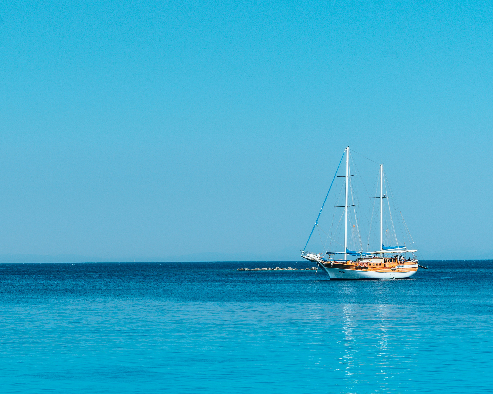
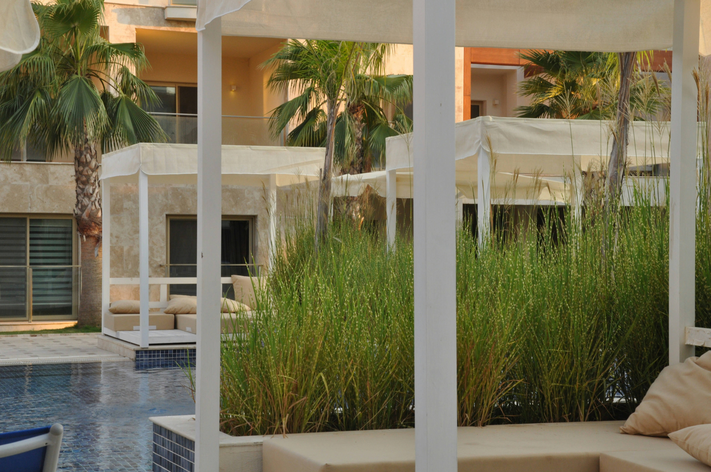

Hoş geldiniz! GeziOM, seyahat tutkunlarının vazgeçilmez rehberi ve keşif partneri olarak karşınızda. Size dünyanın dört bir yanındaki en gizli köşeleri, keşfedilmemiş güzellikleri ve unutulmaz deneyimleri sunuyoruz. Şehirlerin kalbinde, doğal güzelliklerin derinliklerinde ve kültürel hazinelerin arasında yapacağınız yolculuklarda GeziOM, size ilham verecek, yol gösterecek ve seyahatlerinizi daha anlamlı kılacak. Planlamadan keşfe, önerilerden pratik ipuçlarına kadar her şey burada, sizin için hazır. GeziOM ile her adımda yeni bir macera başlatın ve gezmenin keyfini çıkarın!
Muğla'nın güney kıyısında yer alan Bodrum, Türkiye’nin en popüler tatil beldelerinden biri olarak bilinir. Ege Denizi’nin berrak sularıyla çevrili bu güzide şehir, tarihi kalıntıları, etkileyici plajları ve canlı gece hayatıyla her yıl birçok turistin ilgisini çeker. Bodrum’un sunduğu doğal güzellikler, kültürel zenginlikler ve eğlenceli aktivitelerle dolu bir tatil deneyimi yaşamak isteyenler için işte keşfedilmesi gereken başlıca yerler ve öneriler:
Bodrum Antik Tiyatrosu, M.Ö. 4. yüzyılda inşa edilmiş ve antik çağlardan kalma önemli bir yapıdır. Yaklaşık 13.000 kişilik kapasiteye sahip bu tiyatro, muazzam bir akustik özelliğe sahiptir ve çeşitli etkinliklere ev sahipliği yapar. Günümüzde konserler ve açık hava etkinlikleri düzenlenen bu antik tiyatro, tarih meraklıları için keyifli bir ziyaret noktasıdır.
Bodrum Marinası, lüks yatların demirlediği ve çeşitli restoranlar, kafe ve mağazaların bulunduğu bir bölgedir. Burada yürüyüş yapabilir, deniz manzaralı kafelerde oturabilir ve alışveriş yapabilirsiniz. Marinanın çevresindeki butik restoranlarda taze deniz ürünlerini ve Ege mutfağının leziz örneklerini tatma fırsatı bulabilirsiniz.
Akyarlar ve Yalıkavak, Bodrum’un diğer güzel köylerinden ikisidir. Akyarlar, huzurlu bir atmosfer sunarken, Yalıkavak, lüks yat limanı ve şık mekanlarıyla ünlüdür. Her iki bölge de yerel kültürü ve doğal güzellikleri keşfetmek için ideal noktalardır.
Bodrum, canlı gece hayatı ile ünlüdür. Barlar, kulüpler ve gece eğlence mekanlarıyla dolu olan Bodrum, sabaha kadar süren partiler ve eğlenceler sunar. Özellikle Bodrum merkezinde ve Gümbet bölgesinde birçok eğlence seçeneği bulabilirsiniz.
Bodrum, her tür tatilciye hitap eden bir destinasyondur. Tarihi yapıları, güzel plajları, zengin kültürel sahnesi ve dinamik gece hayatı ile tatilcilerin beklentilerini karşılayan bir şehir olarak öne çıkar. Bodrum’da geçireceğiniz zaman, hem dinlenmenizi hem de tarihi ve kültürel zenginlikleri keşfetmenizi sağlar. Ege'nin bu cazibeli incisinde, unutulmaz bir tatil deneyimi yaşamanız garanti.